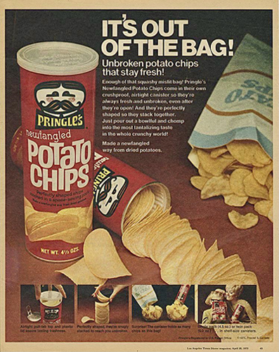
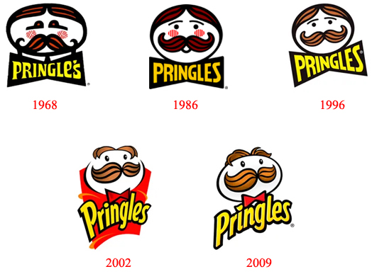

Pringles: The Perfect Combination of Flavor and Innovation
When it comes to irresistible snacks, few products have captured the global palate with the same intensity than the famous Pringles potatoes. With their unique shape, authentic flavor and iconic packaging, Pringles stand out as a notable example of innovation in the world of food.
The Origin and Evolution of Pringles:
Pringles were first introduced to the market by Procter & Gamble in 1967 in the United States. United. The idea behind this revolutionary product was to create a potato chip that was uniform in shape and flavor, in contrast with the irregularities often found in traditional chips. The shape of "swoops" (curve) of Pringles allowed them to be stacked in a cylindrical tube, maximizing packaging space and minimizing potato breakage during transport.
The innovation of Pringles was not just limited to its shape and packaging, but also to its composition. To the Unlike many conventional potato chips, Pringles are made from a blend of potato dehydrated rice flour, corn flour and wheat starch. This mixture is then pressed into its iconic curved shape and baked at high temperature to create the crunchy texture and characteristic flavor of Pringles.
The Variety of Flavors:
One of the reasons Pringles has gained such a loyal fan base is the impressive variety of flavors available. From classics like "Original" and "Sour Cream & Onion" to bold options like "Spicy Sriracha" and "Pizza", Pringles offers a wide range of flavors to suit all palates. Flavor diversity has been a key factor in maintaining Pringles' relevance over the years.
The Global Appeal of Pringles:
The popularity of Pringles has crossed geographic and cultural boundaries. Its practical packaging, which keeps whole and crunchy potato chips, has made them a favorite snack for travel, school snacks and meetings social. The brand has also embraced pop culture and collaborated on several creative advertising campaigns around far away over the years, helping to keep Pringles top of mind among consumers.
Conclusion:
Pringles are more than just potato chips; are a representation of the power of food innovation It is of a brand’s ability to adapt and thrive over time. Its distinctive shape, variety of flavors and Global appeal makes them an icon in the snack industry. Whether it's to satisfy a sudden desire for something crunchy and tasty or to share special moments with friends and family, Pringles continue to be a popular choice that transcends generations.

